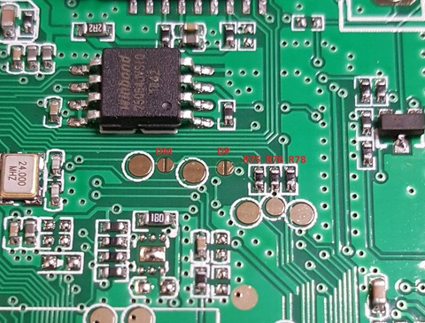
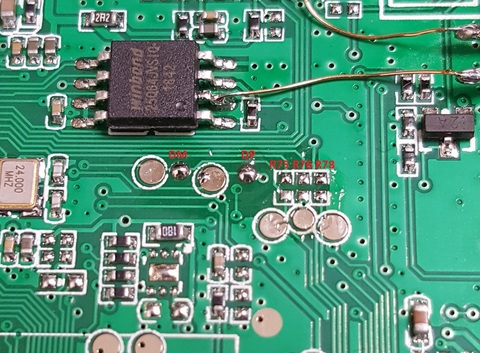

依據目前得到的資料，USB連接的是UART0 TX、DBG_MS、DBG_CK腳位，所以當開機進入sunxi-fel模式時，連接USB到PC時，使用者會發現PC並沒有偵測到任何USB裝置，解決的是則是焊接跳線，如下方式。
1. 短路DM、DP焊點
2. 移除R75、R76、R78電阻


$ sudo dmesg -c [520592.048623] usb 4-1.2.4.4: new full-speed USB device number 64 using ehci-pci [520592.177876] usb 4-1.2.4.4: New USB device found, idVendor=1f3a, idProduct=efe8 [520592.177882] usb 4-1.2.4.4: New USB device strings: Mfr=0, Product=0, SerialNumber=0 $ lsusb Bus 004 Device 064: ID 1f3a:efe8 Onda (unverified) V972 tablet in flashing mode